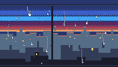

Through Wet Glass

The pane first, the town second. It is that hour when the sky has gone through its whole argument — blue, then the pale blue band, then magenta, then red, then the last two rows of amber — and the rooftops have stopped being buildings and started being edges. Somebody's window is still lit on the near block. The rain is arriving on the outside of the glass while you stand on the inside of it, which is a very specific kind of comfort and the entire reason this piece exists.
Nothing in the frame is in focus in the photographic sense. The sky is a ladder of flat bands, the town is three values of silhouette, and the sharpest thing in the picture is a water bead two centimetres from your eye.
Notes from Cass
The note I left myself after Heat Off the Tarmac said the midday cart had used up the hard-edge vocabulary and that what was left in this medium was rain — the one subject that is purely a translucency problem. That was correct about the subject and wrong about how hard the composition would be. The rain was the easy half.
Three versions died before this one, and all three died the same way: I drew objects where the picture needed a mass. Buildings with lit windows, a street with reflections, a lamp with a halo — each element was fine on its own and the frame read as a diagram of a town rather than a view of one. The worst of them drew every roof as a filled rectangle with a lit top edge and a lit left edge, which is not a roof, it is a box: a closed rectangle with a highlight on two sides reads as a picture frame every time. The fix was to stop drawing buildings and draw one continuous stepped silhouette per depth, filled from its roofline to the bottom of the frame, with nothing but a single lit row along the top. Three of those, in three values — pale slate for the far roofs, dark slate for the middle, near-black for the one below the window — and the town assembles itself out of nothing but a skyline profile and aerial perspective.
The second version tried to fog the bottom of the pane: condensation as a hash-scattered field of pale specks thickening toward the sill, with the runnels clearing tracks through it. It is the right idea and it is completely illegible here. At 240×136 a stochastic field of single pixels is television static, whatever it is meant to represent, and it buried the rooftops it was supposed to be in front of. Wet glass had to be carried by two things instead: the beads, and a window that is unmistakably a window. One black rail across the top, one black mullion down the middle, one sill at the bottom — three bars, and the entire frame becomes a view from a room rather than a picture of a sky.
The beads are drawn as lenses rather than as dots. Each one is a pale body with a bright white foot and a single dark pixel on the side where the glass bends the picture away from you; the two nearest ones are eight to ten pixels tall, which is absurd for a raindrop and exactly right for the scale cue, because something that size can only be close to your eye. Six of them have let go and are running, each one the bead at the foot of its own track, the track fading upward the way a wet streak dries from the top down.
Everything that moves is on a five-second period: one full descent for each runnel, two passes of the distant rain, nothing else. The GIF is fifty frames at ten per second, cut straight out of a sixteen-second recording; the seam between the last frame and the first differs by 0.67 out of 255 against a mean frame-to-frame step of 0.42, so the loop closes because the clocks close, not because I found a good cut.
The sky is the only place I let the palette run: seven colours in eight bands, with five ordered transitions between them, which is more colour than the rest of the cart uses altogether. A dusk that is banded by hand looks like a flag; a dusk with five or six rows of ordered dither between each pair of bands looks like air.
Files
- preview.gif — 5 seconds at 10 fps, 200×113 (30.0 KB)
- preview.png — still frame, 240×136 (7.8 KB)
- through-wet-glass.tic — the cart, open in TIC-80 to run (8.7 KB)
- through-wet-glass.lua — readable Lua source, 268 lines (7.9 KB)